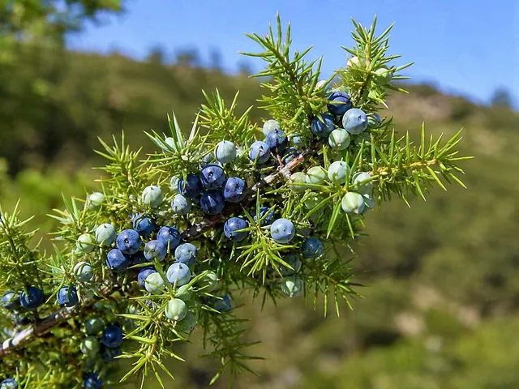

Wild food recipes from Sweden
29 dishes made with foraged ingredients, from drinks and preserves to mains and desserts.
Drinks
 Elderflower cordial (flädersaft)Elderflower
Elderflower cordial (flädersaft)Elderflower Lingonberry drink (lingondricka)Lingonberry
Lingonberry drink (lingondricka)Lingonberry Sea buckthorn juice (havtornssaft)Sea buckthorn
Sea buckthorn juice (havtornssaft)Sea buckthorn Spruce shoot syrup (granskottssirap)Spruce tips
Spruce shoot syrup (granskottssirap)Spruce tips Birch sap (björksav)Birch sap
Birch sap (björksav)Birch sap Rose hip and sea buckthorn juiceRose hips, Sea buckthorn
Rose hip and sea buckthorn juiceRose hips, Sea buckthorn Chaga tea (sprängticka)Chaga
Chaga tea (sprängticka)Chaga
Starters & snacks
 Moules with dill (blåmusslor)Blue mussels
Moules with dill (blåmusslor)Blue mussels Chanterelle toast (kantarelltoast)Chanterelle
Chanterelle toast (kantarelltoast)Chanterelle Fried porcini (stekt karljohan)Porcini
Fried porcini (stekt karljohan)Porcini Fried saffron milk caps (stekt blodriska)Saffron milk cap
Fried saffron milk caps (stekt blodriska)Saffron milk cap
Sauces, preserves & sides
- Lingonberry jam (rårörda lingon)Lingonberry
 Rowan jelly (rönnbärsgelé)Rowan berries
Rowan jelly (rönnbärsgelé)Rowan berries- Rowan jelly with juniperRowan berries, Juniper berries
- Pickled spruce shootsSpruce tips
 Black trumpet butterHorn of plenty
Black trumpet butterHorn of plenty
Main course
 Nettle soup with egg (nässelsoppa)Stinging nettle
Nettle soup with egg (nässelsoppa)Stinging nettle
Juniper and lingonberry game stewJuniper berries, Lingonberry Hedgehog mushroom pieHedgehog mushroom
Hedgehog mushroom pieHedgehog mushroom- Mussels with chivesBlue mussels, Wild chives
 Angelica stems with fish (kvanne)Garden angelica
Angelica stems with fish (kvanne)Garden angelica
 Bilberry pie (blåbärspaj)Bilberry
Bilberry pie (blåbärspaj)Bilberry Cloudberry jam with waffles (hjortronsylt)Cloudberry
Cloudberry jam with waffles (hjortronsylt)Cloudberry Wild strawberries on a straw (smultron)Wild strawberry
Wild strawberries on a straw (smultron)Wild strawberry Elderflower and gooseberry foolWild gooseberry, Elderflower
Elderflower and gooseberry foolWild gooseberry, Elderflower